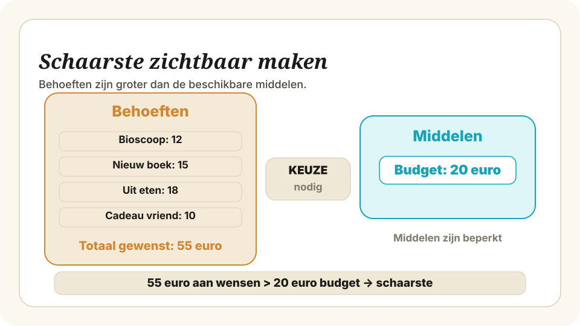
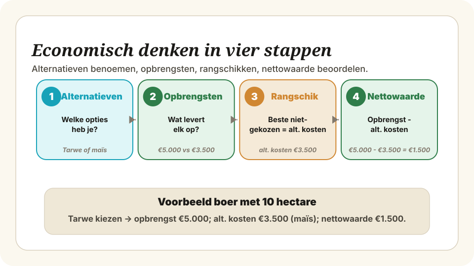

Schaarste en economisch denken — Vaardigheden
Welke vaardigheden leer je in deze paragraaf?
Waarom is dit belangrijk?
Schaarste is het startpunt van élk economisch probleem. Zolang je alles kunt hebben, hoef je niet te kiezen — en is er geen economie. Zodra middelen (tijd, geld, grondstoffen) beperkt zijn ten opzichte van wat mensen willen, ontstaan keuzes, alternatieve kosten en handel. Wie schaarste kan herkennen, snapt waarom een onderwerp überhaupt economisch is.
Hoe werkt het?
Om te bepalen of er in een situatie sprake is van schaarste, loop je drie checks af:
- Check 1 — Zijn de behoeften groter dan de beschikbare middelen? (willen meer mensen iets dan er beschikbaar is?)
- Check 2 — Moet er gekozen worden? (kan niet iedereen alles krijgen wat hij of zij wil?)
- Check 3 — Welke middelen zijn schaars? (tijd, geld, grond, grondstoffen, aandacht, ruimte …)
Als het antwoord op check 1 en check 2 ja is, is er schaarste. Check 3 benoemt het concrete schaarse middel — dat heb je nodig voor elke vervolganalyse.

Voorbeeld — scholier met €20
Lisa heeft op zaterdagochtend €20 gekregen. Ze wil naar de bioscoop (€12) én een nieuw boek kopen (€15).
- Check 1: behoeften (€27) > middelen (€20) ✔
- Check 2: Lisa kan niet beide — ze moet kiezen ✔
- Check 3: het schaarse middel is geld (€20)
Conclusie: ja, er is sprake van schaarste. Het schaarse middel is Lisa’s budget.
| Definitie | Behoeften > beschikbare middelen → keuze onvermijdelijk |
| Check 1 | Meer wensen dan middelen? |
| Check 2 | Moet er gekozen worden? |
| Check 3 | Welk middel is schaars? (tijd, geld, grond, …) |
| Valkuil | Schaarste ≠ weinig — het gaat om de verhouding |
| Verband met | → Vaardigheid 2 (alternatieve kosten berekenen) |
Waarom is dit belangrijk?
Wie kiest, geeft iets op. Dat wat je opgeeft — de opbrengst van het beste niet-gekozen alternatief — zijn de alternatieve kosten van je keuze. Alternatieve kosten laten zien wat een beslissing je werkelijk kost, ook als er geen prijskaartje aan hangt. Zonder dit begrip onderschat je stelselmatig de kosten van gemaakte keuzes.
Hoe werkt het? (4 stappen)
Deze vier stappen komen rechtstreeks uit het vaardighedenregister (unit B02) en zijn de standaardprocedure voor elke alternatieve-kosten-opgave:
Stap 2. Bereken voor elk alternatief de opbrengst (of verwachte opbrengst).
Stap 3. Rangschik de alternatieven; het niet-gekozen alternatief met de hoogste opbrengst zijn de alternatieve kosten.
Stap 4. Vergelijk de opbrengst van de daadwerkelijke keuze met deze alternatieve kosten om de nettowaarde van de keuze te beoordelen.


Voorbeeld — boer: tarwe of maïs op 10 hectare
Een boer heeft 10 hectare land. Hij kan tarwe verbouwen (winst €500 per hectare) of maïs (winst €350 per hectare). Hij kiest voor tarwe. Wat zijn zijn alternatieve kosten?
Stap 1 — Alternatieven: tarwe of maïs (schaars middel: 10 ha land).
Stap 2 — Opbrengst per alternatief:
- Tarwe: 10 ha × €500 = €5.000
- Maïs: 10 ha × €350 = €3.500
Stap 3 — Rangschikken: beste niet-gekozen alternatief = maïs met €3.500. Dat zijn de alternatieve kosten.
Stap 4 — Nettowaarde van de keuze: €5.000 − €3.500 = €1.500 voordeel door voor tarwe te kiezen.

| Definitie | Opbrengst van het beste niet-gekozen alternatief |
| Stap 1 | Benoem alternatieven voor het schaarse middel |
| Stap 2 | Bereken opbrengst per alternatief |
| Stap 3 | Rangschik — beste niet-gekozen = alt. kosten |
| Stap 4 | Nettowaarde = opbrengst keuze − alt. kosten |
| Valkuil | Alt. kosten ≠ prijs; niet optellen |
| Canonical term | “alternatieve kosten” (niet opportunity costs) |
| Verband met | ← Vaardigheid 1 (schaarste als voorwaarde) |
Let op deze veelgemaakte fouten bij het leren van deze paragraaf:
Controleer of je de volgende vaardigheden beheerst: